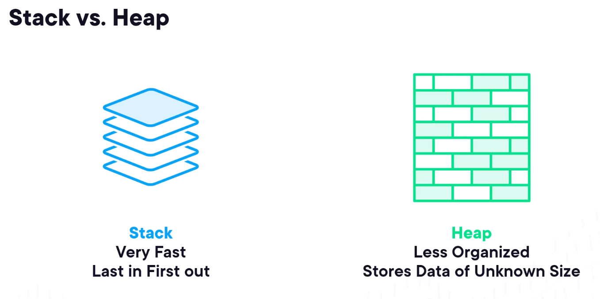
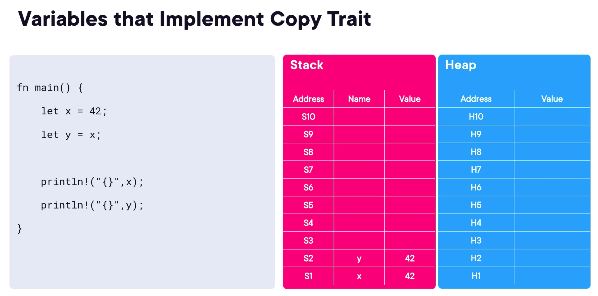
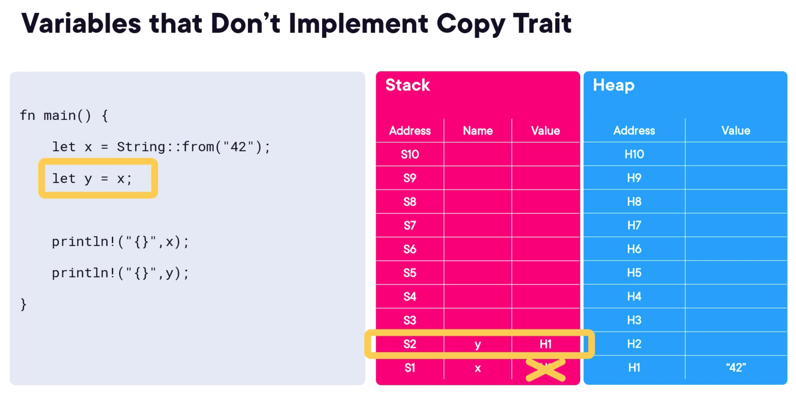

Ownership & Borrowing
Three models of memory management, manual, garbage collection, and ownership & borrowing.
| Memory Management Model | Language |
|---|---|
| Manual | C++ |
| Garbage Collection | Go, Java, C# |
| Ownership & Borrowing | Rust |
Comparison: Memory Management Models

Memory Unsafe
- Segmentation faults
- Buffer overruns
- Dangling pointers
- Double-frees
Garbage Collection
- Does solve the memory
Borrowing
- local scope
- static global scope
- static mutable variable
- Strings in Rust
- copying vs. moving
- cloning
Memory management in Rust is different to most other languages
Need to consider:
- what is the scope of a variable
- why is memory allocated? heap or stack
- what does ownership mean in Rust
When you define a variable in a function:
- the variable has local scope
- the variable goes out of scope at the closing '}'
-
variable memory allocated in the stack or heap depends on fixed or variable size
-
Variables with a known, fixed size will be allocated on the stack.
- Variables with an unknown size at compile time or a size that might change must be allocated on the heap.
Languages with Garbage Collectors e.g. Java, Go, C#, will often abstract away complexities of the Stack and the Heap.

Ownership is a set of rules that govern how a Rust program manages memory. It helps ensure the memory safety of your program without a garbage collector.,p/>
Rules of Ownership
- Each value in Rust has a variable called its owner.
- There can only be one owner at a time.
- When the owner goes out of scope, the value will be dropped. The two pillars of Rust are Speed and Safety. Rust has a borrower checker to enforce these rules at compile time.
When you define a variable in a block
- the variable has block scope
- the variable goes out of scope at the closing '}'
Copyable Data Types
- primitive types (scalar & compound)
- known, fixed-size types at compile time
- stored on the stack
- implement the Copy trait
Copy Trait
Primitive types implement the Copy trait. When you assign a value to another variable, it bit-copies the value. The original variable is still valid. 
Move Semantics
Other types don't implement the Copy trait. When you assign a value to another variable, it moves the value. 
Possible to allocate memory elsewhere in Rust:
- static storage
- heap-based storage
pub fn do_it() {
println!("\nIn demo_locals::do_it()");
let x = 42; // local scope
if x != 0 {
let s1 = "Andy"; // black scope
println!("s1: {}", s1);
}
// Nope:
// println!("s1 {}", s1); // compile error because s1 is out of scope
}
static local scope
- a static variable is allocated permanently
- it exists until the program terminates
you can define static variables:
- Locally, inside a function
- Globally, outside a function
use once_cell::sync::Lazy;
// Defined in the once_cell crate.
use chrono::{DateTime, Utc}; // Defined in the chrono crate.
use std::thread::sleep;
use std::time::Duration;
pub fn do_it() {
println!("\nIn demo_static_local::do_it()");
static_init_at_compile_time();
static_init_at_run_time();
}
fn static_init_at_compile_time() {
static MESSAGE: &str = "Croeso o Gymru 😃";
println!("MESSAGE: {}", MESSAGE);
}
fn static_init_at_run_time() {
// This statement won't work.
// You can't initialize a static directly with a run-time value (it's not thread-safe).
// static TIMESTAMP_WONT_WORK: DateTime<Utc> = Utc::now();
println!("Curr time: {}", Utc::now().format("%T"));
static TIMESTAMP: Lazy<DateTime<Utc>> = Lazy::new(|| {
sleep(Duration::new(5, 0));
let now = Utc::now();
println!("Curr time: {}", now.format("%T"));
return now;
});
println!("TIMESTAMP: {}", (*TIMESTAMP).format("%T"));
}
Copy vs Clone
In Rust, bit-wise copying can copy only primitive types or struct containing primitive types. The variables are unknown & not-fixed size can be cloned, and clone() is a method that creates a deep copy of the data.
For example, the Person struct can be cloned, because it contains String, which is a heap-allocated type.
For example the Person struct can be copied, because it contains only primitive types.
String Handler
pub fn do_it() {
println!("\nIn demo_string_handling::do_it()");
using_string_literals();
using_string_objects();
using_mutable_string_objects();
}
fn using_string_literals() {
let s1 = "hello";
let s2: &'static str = "world";
println!("s1: {}, ptr: {:p}, len: {} ", s1, s1.as_ptr(), s1.len());
println!("s2: {}, ptr: {:p}, len: {} ", s2, s2.as_ptr(), s2.len());
}
fn using_string_objects() {
let s3 = String::from("wales");
let s4: String = String::from("cymru");
println!("s3: {}, ptr: {:p}, len: {}", s3, s3.as_ptr(), s3.len());
println!("s4: {}, ptr: {:p}, len: {}", s4, s4.as_ptr(), s4.len());
} // String objects go out of scope here, so drop() is called on the Strings objects (because String implements the Drop trait).
fn using_mutable_string_objects() {
let mut s5 = String::from(" super");
s5.push_str(" swans! ");
let s6 = s5.trim().to_uppercase();
println!("s5: {}, ptr: {:p}, len: {}", s5, s5.as_ptr(), s5.len());
println!("s6: {}, ptr: {:p}, len: {}", s6, s6.as_ptr(), s6.len());
}
Copy vs Moving Demo
pub fn do_it() {
println!("\nIn demo_copying_vs_moving::do_it()");
// Simple types implement the Copy trait.
// When you assign, it bit-copies the value.
let a = 42;
let b = a;
println!("a: {}, b: {}", a, b);
// Other types don't implement the Copy trait.
// When you assign, it moves the value (i.e. transfers ownership).
// The original variable is invalidated.
let s1 = String::from("hello");
let s2 = s1;
// Nope! Can't use s1 because its value has been moved into s2.
// println!("s1: {}", s1);
// This is ok.
println!("s2: {}", s2);
}
Cloning Demo
pub fn do_it() {
println!("\nIn demo_cloning::do_it()");
// Simple types implement the Copy trait
let a = 42;
let b = a;
println!("a: {}, b: {}", a, b);
// Other types don't implement the Copy trait.
// If you do want to copy without invalidating the original, call clone().
let mut s1 = String::from("hello");
let s2 = s1.clone();
s1.push_str(" world, det er istid eller kaffetid snart");
println!("s1: {}", s1);
println!("s2: {}", s2);
}